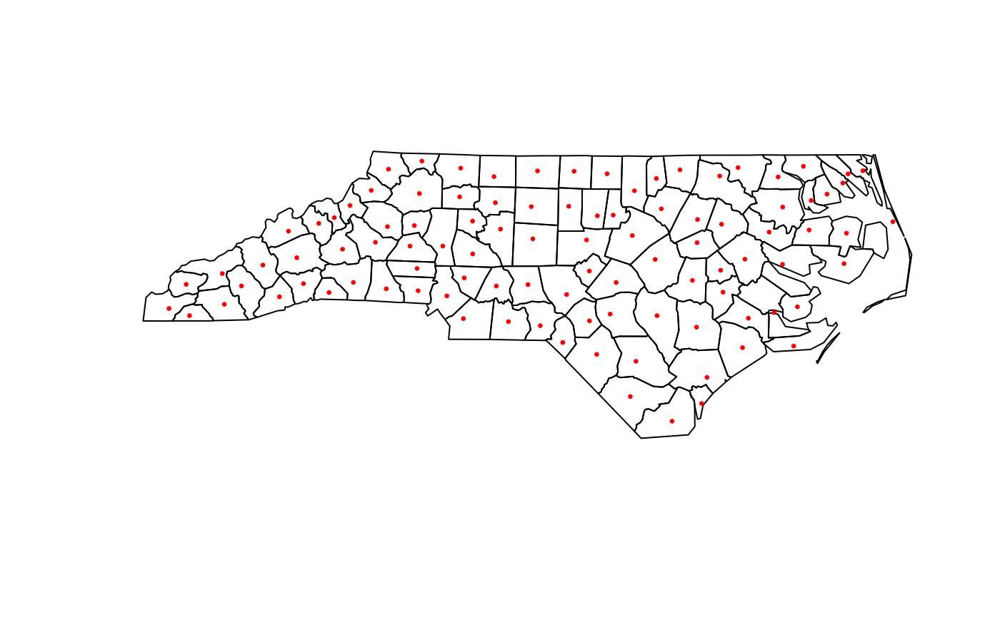
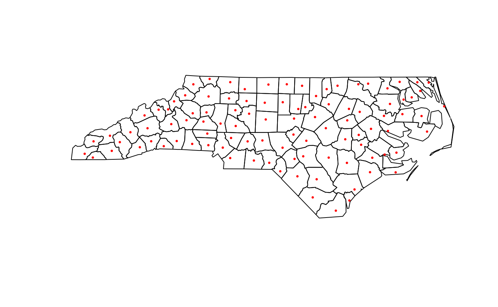

This package was designed to be used to easily calculate population weighted centroids within R. While there are many scenarios in which you may require a weighted centroid, I present the following as an typical workflow for my usage.
For this example we are going to be calculating the population weighted centroids for North Carolina counties. As such, we require population and geographic data at a more granular geographic classification. We will use tracts.
Downloading Data
We can download census population estimates and geographic layer
files using the ever convenient tidycensus package.
sf also has a North Carolina counties file, which we will
use later, but you can always download census geometries directly from
the census using tigris.
library(centr)
library(sf)
library(tidycensus)
NC_tracts <- get_decennial(
"tract",
state = "NC",
"P1_001N",
year = 2020,
geometry = TRUE
)
NC_counties <- st_read(system.file("shape/nc.shp", package = "sf"))Setting Up
We will need fields that tells us what county each tract is in and how many people live within each tract. Thankfully, the first 5 digits of the GEOID, uniquely identify the county a tract is in, which means that we can easily create a new field with this ID. The value field also gives us our weights.
NC_tracts <- NC_tracts |>
transform(GEOID_county = substring(GEOID, 1, 5)) |>
subset(select = c(GEOID_county, value))Let’s use mean_center() to get our county
geometries!
mean_center(NC_tracts, group = "GEOID_county", weight = "value")
#> Error in `mean_center()`:
#> ! `x` must not have any empty geometries.Oh, it looks like we forgot one thing. At least one of our tracts has
an empty geometry. Before running mean_center(), we must
filter out empty geometries.
NC_tracts <- subset(NC_tracts, !st_is_empty(NC_tracts))Calculation Mean Centers
Now, we can calculate our mean centers!
NC_county_means <- mean_center(
NC_tracts,
group = "GEOID_county",
weight = "value"
)
NC_county_means
#> Simple feature collection with 100 features and 1 field
#> Geometry type: POINT
#> Dimension: XY
#> Bounding box: xmin: -84.02568 ymin: 34.0428 xmax: -75.67387 ymax: 36.49819
#> Geodetic CRS: NAD83
#> # A tibble: 100 × 2
#> GEOID_county geometry
#> * <chr> <POINT [°]>
#> 1 37001 (-79.41359 36.07104)
#> 2 37003 (-81.19492 35.88941)
#> 3 37005 (-81.10783 36.49819)
#> 4 37007 (-80.10947 34.98287)
#> 5 37009 (-81.49321 36.42097)
#> 6 37011 (-81.93716 36.07862)
#> 7 37013 (-76.94663 35.52365)
#> 8 37015 (-76.94512 36.06374)
#> 9 37017 (-78.63796 34.60854)
#> 10 37019 (-78.2212 34.0428)
#> # ℹ 90 more rowsLet’s see how it looks.
plot(st_geometry(NC_counties))
plot(st_geometry(NC_county_means), pch = 20, cex = 0.5, col = "red", add = TRUE)
Calculating Median Centers
We can also calculate median centers, which is the point that minimizes distance to all geometries.
NC_county_medians <- median_center(
NC_tracts,
group = "GEOID_county",
weight = "value"
)
NC_county_medians
#> Simple feature collection with 100 features and 1 field
#> Geometry type: POINT
#> Dimension: XY
#> Bounding box: xmin: -84.01418 ymin: 34.02256 xmax: -75.6836 ymax: 36.52039
#> Geodetic CRS: NAD83
#> # A tibble: 100 × 2
#> GEOID_county geometry
#> * <chr> <POINT [°]>
#> 1 37001 (-79.42453 36.07912)
#> 2 37003 (-81.19136 35.88628)
#> 3 37005 (-81.11889 36.52039)
#> 4 37007 (-80.09359 34.9732)
#> 5 37009 (-81.49626 36.4186)
#> 6 37011 (-81.94286 36.0956)
#> 7 37013 (-76.98811 35.53398)
#> 8 37015 (-76.94037 36.04655)
#> 9 37017 (-78.63911 34.61783)
#> 10 37019 (-78.19474 34.02256)
#> # ℹ 90 more rowsLet’s see how it looks.
plot(st_geometry(NC_counties))
plot(
st_geometry(NC_county_medians),
pch = 20,
cex = 0.5,
col = "red",
add = TRUE
)
And that’s the whole game, so go out and try it for yourself!